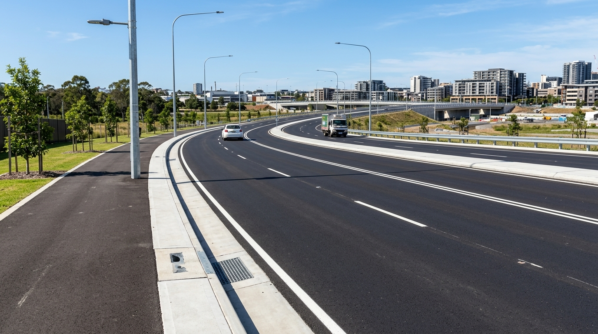
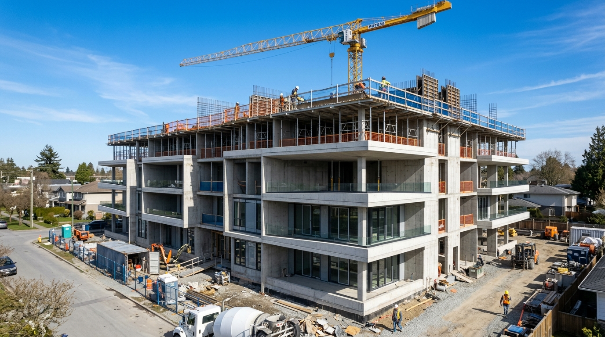

CIVIL ENGINEER • DESIGN • CONSTRUCTION • INFRASTRUCTURE
Engineering Ideas Into Structures That Last.
Hi, I'm Abdul Qudoos Sall, a Civil Engineer focused on developing practical,
safe, efficient, and sustainable engineering solutions through technical design,
construction management, and infrastructure development.
Precision Engineering Grounded in Integrity and Technical Rigor.
"Good engineering is more than creating structures. It is about creating solutions that are safe, efficient, sustainable, and built to serve communities for generations."
With rigorous academic training from Fourah Bay College, University of Sierra Leone, and practical engineering exposure on structural analysis, site supervision, and technical drafting, I combine analytical problem-solving with code-compliant design practices.
Structural analysis and reinforced concrete frame design coordination for a multi-storey commercial facility requiring rigorous lateral stability modeling.
AutoCADETABSRevit
Transportation2024

Freetown, Sierra Leone
Highway Infra
Urban Road Rehabilitation
Corridor roadway upgrade and roadside drainage improvement initiative mitigating seasonal flooding and restoring pavement structural integrity.
AutoCADCivil 3DSurvey
Structural Design2024

Sierra Leone
Housing
Modern Residential Development
Structural planning, reinforced concrete member sizing, and comprehensive technical drawing documentation for a modern multi-unit development.
STAAD.ProAutoCADRevit
Engineering Methodology
Disciplined Execution Process
A systematic 4-phase framework ensuring every engineering deliverable satisfies structural stability, economy, and site safety.
01
Phase 01
ASSESS
Thorough evaluation of project scope, client parameters, topographic contours, soil investigation data, and municipal statutory codes.
02
Phase 02
ANALYZE
Rigorous computational modeling of dead, live, wind, and seismic loadings, stress analysis, and material behavior simulation.
03
Phase 03
DESIGN
Detailed structural calculations, member dimensioning, AutoCAD drafting, rebar scheduling, and value-engineering optimization.
04
Phase 04
DELIVER
Authoritative technical documentation, site inspections, contractor coordination, quality control, and as-built verification.
Let's Build Together
Ready to Collaborate on Civil Engineering Projects?
Whether you need structural analysis, construction documentation, or on-site engineering coordination, I am prepared to contribute with technical excellence.